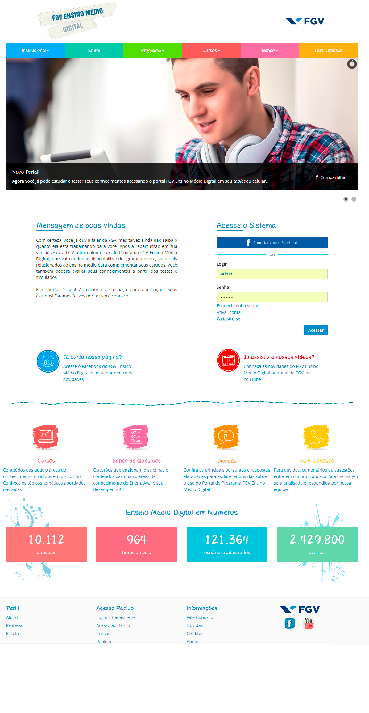

Project lead: Mariana Guglielmo
Before-and-after view of the redesign of FGV Ensino Médio, a national educational platform with more than 120,000 registered users. I coordinated requirements gathering, information architecture, the development of distinct user experiences for students, teachers, and schools, testing, and final functional approval in collaboration with FGV's IT team and an external design firm.
